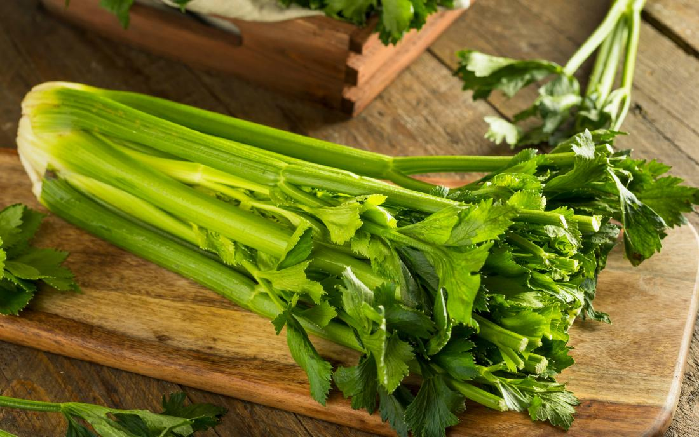

Vegetables App
Created by Jordan Chen, David Ramirez, Adi Vandanapu, Alex Mendoza, Bryan Nguyen, Eugenio Perez
Select a Vegetable:
Click to Clear Veggie
Celery
Carrot
Dark Radish
Amaranth
Garlic
Black Lentils
Okra
Purple Yam
Click on a Vegetable Below to find more information about it!
Celery

A celery is a delicious, watery Vegetable.
Carrot
Dark Radish